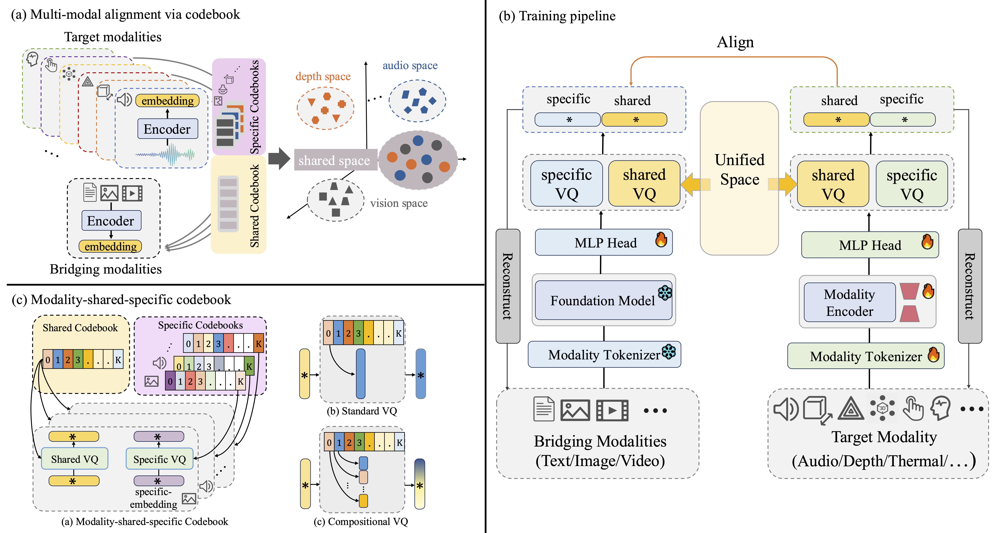
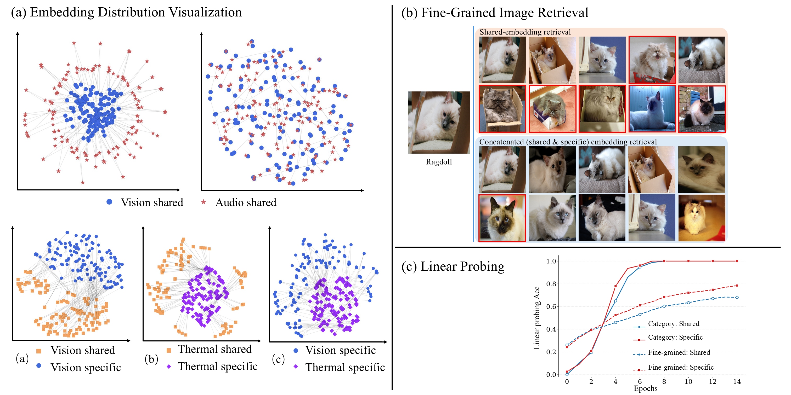
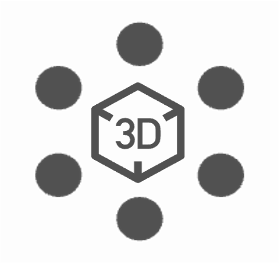
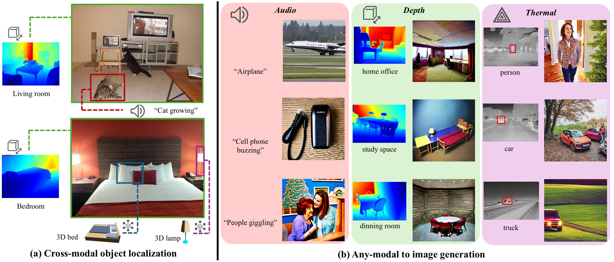

Multimodal representation alignment is pivotal for large language models and robotics. Traditional methods are often hindered by cross-modal information discrepancies and data scarcity, leading to suboptimal alignment spaces that overlook modality-unique features. CodeBind optimizes multimodal representation spaces through a modality-shared-specific codebook design. By incrementally aligning target and bridging modalities, it bypasses the need for fully paired data. The framework decomposes features into shared components for semantic consistency and specific components for modality-unique details, then uses compositional vector quantization to align text, image, video, audio, depth, thermal, tactile, 3D point cloud, and EEG modalities.
Embeddings are split into modality shared and specific components, reducing over-alignment while preserving fine-grained information.
A shared codebook supports cross-modal consistency, while specific codebooks keep modality-unique information from being suppressed.
CodeBind aligns target modalities through bridging modalities (text and vision) and validates the design across nine modalities for cross-modalclassification and retrieval.


| Image | Video | Depth | Audio | Thermal | Tactile | EEG | |||||||||||
|---|---|---|---|---|---|---|---|---|---|---|---|---|---|---|---|---|---|
| Method | IN1K | P365 | K400 | MSR-VTT | NYU-D | SUN-D | Audioset | VGGS | ESC | Clotho | AudioCaps | LLVIP | FLIR_v2 | TAG-M | TAG-H/S | TAG-R/S | IN-EEG |
| ImageBind | 77.7 | 45.4 | 50.5 | 36.1 | 54.0 | 35.1 | 17.6 | 27.8 | 66.9 | 6.0/28.4 | 9.3/42.3 | 63.4 | 46.6 | 24.2 | 65.7 | 69.8 | 18.4 |
| CodeBind | 79.3 | 55.5 | 54.4 | 37.8 | 59.3 | 45.7 | 21.1 | 30.5 | 71.0 | 6.9/28.6 | 13.3/53.8 | 95.5 | 97.2 | 42.6 | 83.9 | 78.2 | 33.1 |
| Depth | Audio | Tactile | EEG |  3D |
||||||||
|---|---|---|---|---|---|---|---|---|---|---|---|---|
| Method | NYU-D | SUN-D | Audioset | VGGS | ESC | Clotho | AudioCaps | TAG-M | TAG-H/S | TAG-R/S | IN-EEG | ModelNet40 |
| ViT-Lens | 68.5 | 52.2 | 26.7 | 31.7 | 75.9 | 8.1/31.2 | 14.4/54.9 | 65.8 | 74.7 | 63.8 | 41.8/42.7 | 70.6/94.4 |
| CodeBind-VL | 71.1 | 54.8 | 29.2 | 39.5 | 78.8 | 8.5/32.8 | 15.6/55.0 | 67.6 | 76.1 | 72.8 | 54.5/54.1 | 78.3/96.5 |
The two tables preserve the comparison settings for ImageBind and ViT-Lens respectively. For retrieval, Recall@1 is reported on MSR-VTT and ESC, and Recall@1/Recall@10 are reported on Clotho and AudioCaps. For classification, Acc@1 is reported on all other datasets, except AudioSet, where mAP is reported.

@article{chen-etal-2026-codebind,
title = {CodeBind: Decoupled Representation Learning for Multimodal Alignment with Unified Compositional Codebook},
author = {Chen, Zeyu and Li, Jie and Han, Kai},
journal = {arXiv preprint arXiv:26XX.XXXXX},
year = {2026},
}